224 — Service Bus, Event Grid y Event Hubs
Parte: 18 — Azure: arquitectura empresarial y operación en producción
Nivel: avanzado · Horas estimadas: 4
Laboratorio: messaging · Estado: EXECUTABLE_CORE
🎯 Propósito
Elegir entre los tres servicios de mensajería de Azure, que se confunden constantemente porque los tres «llevan mensajes» y resuelven cosas distintas. La clase separa el bus de mensajes empresarial, el enrutador de eventos y el flujo de gran volumen por lo que cada uno garantiza, desarrolla los mecanismos propios del primero —sesiones, transacciones, detección de duplicados— y aplica la disciplina de siempre: idempotencia, cola de fallidos vigilada y reproceso probado.
📚 Resultados de aprendizaje
Al finalizar podrás:
- Elegir entre bus, enrutador y flujo según lo que se garantiza.
- Usar sesiones, transacciones y detección de duplicados donde aportan.
- Configurar bloqueo, reintentos y cola de fallidos coherentemente.
- Consumir un flujo con posiciones y reparto por partición.
- Operar los mensajes fallidos con alerta, diagnóstico y reproceso.
🧩 Conceptos centrales
| Concepto | Comprensión verificable |
|---|---|
bus de mensajes |
Colas y temas con garantías empresariales: orden por sesión, transacciones, detección de duplicados y cola de fallidos. |
enrutador de eventos |
Servicio que entrega eventos a destinos según filtros. Uno a muchos, con reintentos y destino de fallidos. |
flujo de eventos |
Registro particionado de gran volumen, con lectores independientes y reproceso por posición. |
sesión |
Agrupación de mensajes por clave que garantiza orden y entrega al mismo consumidor. |
bloqueo del mensaje |
Tiempo durante el que el mensaje tomado no se entrega a otro. Debe superar el proceso o hay duplicados. |
detección de duplicados |
Descarte de mensajes con el mismo identificador dentro de una ventana. No sustituye a la idempotencia. |
🧠 Modelo mental
La arquitectura Azure nace del tenant y las políticas heredables, y llega al workload mediante identidades administradas y redes privadas.
Aplicado a esta clase, separa siempre cuatro planos: intención (qué necesita el usuario), configuración (qué declaramos), estado observado (qué existe de verdad) y evidencia (cómo sabemos que cumple). Confundirlos produce diseños que se ven correctos en un diagrama pero fallan al operar.
🗺️ Flujo de razonamiento

📖 Desarrollo
1. Tres servicios, tres propósitos
Los tres transportan mensajes y garantizan cosas distintas. Elegir mal produce sistemas que funcionan hasta que hay carga o hay que reprocesar.
BUS DE MENSAJES (Service Bus)
colas y temas con suscripciones
garantiza
entrega al menos una vez, con bloqueo y confirmación
ORDEN por sesión
transacciones entre entidades del propio bus
detección de duplicados en una ventana
cola de fallidos integrada
y mensajes programados y diferidos
para pedidos, pagos, integraciones donde perder o
desordenar cuesta dinero
ojo caudal moderado; no es para millones por segundo
ENRUTADOR DE EVENTOS (Event Grid)
entrega eventos a destinos según filtros de contenido
garantiza
entrega al menos una vez, con reintentos y retroceso
destino de fallidos
y filtros declarativos
para reaccionar a lo que ocurre; uno a muchos
incluidos los eventos de la propia plataforma
ojo NO garantiza orden
FLUJO (Event Hubs)
registro particionado, con lectores independientes
garantiza
orden DENTRO de la partición
retención por tiempo y reproceso por posición
varios grupos de consumidores sin duplicar el
almacenamiento
para telemetría, trazas, clics, sensores: gran volumen
ojo el consumidor gestiona su posición; si la pierde,
reprocesa o se salta clase 116
Y la combinación habitual, que es la que hay que reconocer:
algo ocurre → ENRUTADOR (uno a muchos, con filtros)
→ COLA del bus por consumidor
→ función o contenedor
y por separado
telemetría de alto volumen → FLUJO → procesamiento y
almacén analítico
→ y la cola entre el enrutador y el consumidor sigue siendo
lo que amortigua y da control de reintentos clase 210
Y el error de elección más caro:
usar el flujo como si fuera una cola
no hay bloqueo por mensaje ni confirmación individual
no hay cola de fallidos integrada
un mensaje venenoso bloquea la partición entera
→ hay que implementar todo eso a mano
y al revés: usar el bus para telemetría de alto volumen
→ caudal insuficiente y coste alto
2. Los mecanismos del bus
El bus tiene mecanismos que no existen en otros servicios y que resuelven problemas concretos.
SESIONES — orden por clave
los mensajes con la misma clave de sesión van al mismo
consumidor, en orden
→ resuelve «los eventos de un pedido deben procesarse en
orden» sin serializar todo
coste
el caudal por sesión lo limita un solo consumidor
y el consumidor debe mantener la sesión bloqueada
→ usar sesiones solo donde el orden importe clase 203
TRANSACCIONES
varias operaciones del bus en una unidad atómica
→ recibir de una cola y enviar a otra, todo o nada
ojo solo dentro del mismo espacio de nombres; NO
incluye la base de datos
→ para eso sigue haciendo falta la tabla de salida
clase 118
DETECCIÓN DE DUPLICADOS
descarta mensajes con el mismo identificador dentro de
una ventana de tiempo
+ evita duplicados del PRODUCTOR que reintenta
− no cubre el reproceso ni la reentrega tras bloqueo
vencido
→ NO sustituye a la idempotencia del consumidor
clase 210
MENSAJES PROGRAMADOS Y DIFERIDOS
programado se entrega a una hora futura
diferido el consumidor lo aparta y lo recupera por su
número de secuencia
→ útiles para reintentos con retroceso largo y para
esperar a que llegue otra cosa
Los parámetros que producen duplicados, con la misma aritmética de la clase 210:
DURACIÓN DEL BLOQUEO
el mensaje tomado queda bloqueado ese tiempo
si el proceso tarda más, el bloqueo VENCE y el mensaje se
reentrega
→ duplicados
dos soluciones
bloqueo mayor que el proceso máximo
o RENOVAR el bloqueo desde el consumidor mientras
trabaja
→ la renovación automática existe en las bibliotecas y
hay que activarla
RECUENTO MÁXIMO DE ENTREGAS
cuántas veces antes de ir a la cola de fallidos
típico 3 a 5
TAMAÑO DE LOTE Y PREBÚSQUEDA
la prebúsqueda trae mensajes por adelantado
+ menos latencia
− esos mensajes están bloqueados aunque no se procesen
→ prebúsqueda alta con proceso lento = bloqueos vencidos
y duplicados
Y la regla:
prebúsqueda × tiempo de proceso < duración del bloqueo
→ o se renueva el bloqueo activamente
3. El flujo y sus posiciones
El flujo funciona distinto y su operación tiene sus propias trampas.
PARTICIONES
el caudal se reparte entre particiones
la CLAVE decide en cuál cae cada evento
→ misma clave, misma partición, mismo orden clase 116
→ y una clave caliente satura una partición mientras las
demás están ociosas
y el número de particiones
condiciona el paralelismo máximo del consumo
→ más consumidores que particiones = consumidores
ociosos
POSICIÓN DEL LECTOR
cada grupo de consumidores guarda por dónde va
→ y esa posición hay que persistirla
→ si se pierde, se reprocesa desde el principio o se
salta lo pendiente
LA REGLA
guardar la posición DESPUÉS de procesar, no antes
→ guardarla antes produce pérdida silenciosa ley 13
→ guardarla después produce reproceso, que la
idempotencia absorbe
RETENCIÓN
los eventos viven un tiempo, no hasta que se consumen
→ si el consumidor está caído más que la retención, se
pierden eventos
→ alerta por RETRASO del consumidor frente a la
retención ley 13
Y el mensaje venenoso, que aquí es más grave:
en una cola, un mensaje que falla acaba en la cola de
fallidos y los demás siguen
en un flujo, si el consumidor falla y no avanza, la
PARTICIÓN ENTERA se detiene
→ hay que decidir qué hacer con lo que no se puede
procesar
· apartarlo a una cola de fallidos propia y avanzar
· o parar y alertar, si perder orden es inaceptable
→ y esa decisión hay que escribirla; no viene dada
Y la captura hacia almacenamiento, que ahorra trabajo:
el flujo puede volcar automáticamente a almacenamiento de
objetos
→ da el histórico para análisis sin escribir un
consumidor
→ y el reproceso de meses se hace desde ahí, no desde el
flujo clase 150
4. Fallidos, reproceso y operación
La disciplina es la misma de la clase 210, con las piezas de Azure.
LA COLA DE FALLIDOS DEL BUS
cada cola y cada suscripción tiene la suya, integrada
los mensajes llegan con el MOTIVO y la descripción
→ y eso es lo que permite distinguir veneno de
dependencia clase 210
y llegan también por
caducidad del mensaje
error de evaluación de una regla de suscripción
y tamaño excedido
→ tres causas que no son «el consumidor falló»
LAS ALERTAS
«hay mensajes en la cola de fallidos» insuficiente
«el mensaje más antiguo supera 1 hora» ← la útil
«la cola activa crece de forma sostenida»
«el retraso del consumidor del flujo se acerca a la
retención» ← crítica
Y el reproceso, con la lección de la clase 210:
procedimiento escrito, con límite de ritmo y por lotes
con posibilidad de reprocesar uno solo
ejecutado por alguien que no lo escribió ley 22
y los venenos, descartados con registro
→ reprocesar todo de golpe dispara la concurrencia y tumba
lo que se acababa de recuperar clase 207
La idempotencia, que sigue siendo obligatoria:
la detección de duplicados del bus cubre al productor
las sesiones cubren el orden
NINGUNA de las dos cubre
el bloqueo vencido y la reentrega
el reproceso desde la cola de fallidos
el reproceso del flujo desde una posición anterior
→ clave de idempotencia del productor, registro con estados
y escritura condicionada clase 210
Lo que hay que vigilar:
mensajes activos, programados y en cola de fallidos
antigüedad del más viejo, en las tres
bloqueos vencidos: señal directa de duración mal puesta
entregas repetidas del mismo mensaje
retraso del consumidor del flujo, en eventos y en tiempo
unidades de caudal del flujo frente a lo consumido
y el retraso entre que ocurre el hecho y se procesa
→ la medida que le importa al negocio clase 211
Y la lista de comprobación de la clase:
☐ el servicio elegido corresponde a lo que hay que
garantizar
☐ hay cola entre el enrutador y el consumidor
☐ las sesiones se usan solo donde el orden importa
☐ la duración del bloqueo supera el proceso, o se renueva
☐ prebúsqueda × tiempo de proceso < duración del bloqueo
☐ la detección de duplicados no se usa como sustituto de la
idempotencia
☐ toda operación con efecto es idempotente
☐ el número de particiones del flujo permite el paralelismo
necesario
☐ la posición del lector se guarda DESPUÉS de procesar
☐ está decidido qué hacer con un mensaje venenoso en el
flujo
☐ hay alerta por antigüedad en la cola de fallidos
☐ hay alerta de retraso del consumidor frente a la
retención
☐ el procedimiento de reproceso existe y se ha ejecutado
☐ los venenos se descartan con registro
Y el cierre que enlaza con la clase siguiente: con datos y mensajería en pie, falta saber qué ocurre cuando algo va mal. Observabilidad en Azure, con instrumentación estándar, es la materia de la clase 225.
🔬 Ejemplo trabajado
CloudShop monta la mensajería de su plataforma en Azure. Lo que sigue son los tres errores de elección del primer diseño, el incidente del flujo que perdió cuatro horas de telemetría, y los parámetros que quedaron.
El primer diseño, con las tres elecciones equivocadas:
confirmación de pedido → enrutador de eventos, directo
a 3 funciones
telemetría de la web → bus de mensajes
integración con el ERP → enrutador de eventos
Y lo que falló en cada una:
1 CONFIRMACIÓN DE PEDIDO al enrutador, directo a funciones
sin cola en medio
→ sin amortiguación: en campaña, las funciones escalaron
a 2.400 y tumbaron la base clase 207
→ sin control de reintentos por consumidor
→ y sin cola de fallidos por consumidor: los tres
compartían destino de fallidos y no se distinguía
cuál había fallado
corrección
enrutador → 3 colas del bus → 3 consumidores
cada una con su bloqueo, reintentos y cola de fallidos
2 TELEMETRÍA de la web al bus de mensajes
volumen 41.000 eventos/s
el espacio de nombres del bus se saturó
coste estimado con el nivel necesario 3.900 €/mes
corrección
flujo de eventos, 8 particiones
coste 340 €/mes
y captura automática a almacenamiento para el
histórico clase 150
3 INTEGRACIÓN CON EL ERP al enrutador
el ERP exigía procesar las líneas de un pedido EN ORDEN
el enrutador no garantiza orden
→ líneas procesadas fuera de orden: 61 pedidos con
estado incorrecto en 3 semanas
corrección
cola del bus CON SESIONES, clave = identificador de
pedido
→ orden garantizado dentro de cada pedido
→ y paralelismo entre pedidos distintos
El incidente del flujo: cuatro horas de telemetría perdidas.
situación el consumidor del flujo se desplegó con un
fallo y entró en bucle de reinicio
retención del flujo 1 día
pero el consumidor guardaba su posición ANTES
de procesar
qué pasó
al arrancar, el consumidor leía un lote, guardaba la
posición, y fallaba al procesar
al reiniciar, leía DESDE LA POSICIÓN GUARDADA
→ los eventos de ese lote nunca se procesaron
→ y no quedaba rastro: la posición decía que estaban
hechos
duración del bucle 4 h 10
eventos perdidos ~610 millones
cómo se detectó el panel de negocio mostró 0 visitas
durante 4 horas ley 15
qué salvó el caso
la captura automática a almacenamiento seguía activa
→ los eventos estaban ahí
→ se reprocesaron desde los ficheros, en 6 h
correcciones
1 la posición se guarda DESPUÉS de procesar
→ produce reproceso, que la idempotencia absorbe
2 alerta de retraso del consumidor: «el retraso supera
el 50 % de la retención»
3 alerta de reinicios del consumidor clase 221
4 y una comprobación de negocio: «visitas por minuto
por debajo del mínimo esperado»
→ esta es la que lo habría detectado en 5 minutos
clase 211
Los duplicados del bus, y el bloqueo.
síntoma bajo carga, algunos pedidos generaban dos
notificaciones
diagnóstico
duración del bloqueo 30 s (defecto)
prebúsqueda 20 mensajes
tiempo de proceso por mensaje 1,8 s
20 × 1,8 = 36 s > 30 s
→ los últimos mensajes del lote perdían el bloqueo antes
de procesarse
→ se reentregaban a otro consumidor
y la métrica que lo confirmaba
«bloqueos vencidos»: 340/hora en el pico
→ estaba disponible y no estaba en ningún panel
ley 15
correcciones
duración del bloqueo 30 s → 120 s
prebúsqueda 20 → 10
renovación automática del bloqueo activada
e idempotencia en el consumidor de notificaciones
bloqueos vencidos 340/h → 0
notificaciones duplicadas 61 → 0
La configuración final:
ENRUTADOR DE EVENTOS
eventos de negocio y de la plataforma
filtros por tipo y por contenido
destino: colas del bus, nunca funciones directas
reintentos: 5 con retroceso; destino de fallidos
configurado
BUS DE MENSAJES
cola bloqueo prebúsq. entregas sesiones
notificaciones 120 s 10 5 no
inventario 180 s 10 5 no
facturación 300 s 5 5 no
erp 240 s 1 3 SÍ
→ la de sesiones con prebúsqueda 1: el orden importa más
que la latencia
detección de duplicados activada en la cola de pedidos,
ventana de 10 minutos
→ y aun así, idempotencia en los cuatro consumidores
FLUJO
8 particiones, clave = identificador de sesión de usuario
2 grupos de consumidores: proceso en tiempo real y
análisis
retención 3 días (subida desde 1)
captura automática a almacenamiento, cada 5 min
posición guardada después de procesar
Las alertas montadas:
antigüedad del mensaje más viejo en cada cola de fallidos
umbral 1 hora → canal de guardia
cola activa creciendo de forma sostenida
bloqueos vencidos > 0
retraso del consumidor del flujo > 50 % de la retención
eventos por minuto por debajo del mínimo esperado
→ la de negocio, que detecta lo que las técnicas no
reinicios de consumidores
El reproceso, probado:
primer ensayo
se dejaron 8.000 mensajes en la cola de fallidos a
propósito
quien lo ejecutó no había escrito el procedimiento
→ 2 de 7 pasos necesitaron aclaración
→ y el límite de ritmo estaba en el paso 4, no en el 1
→ se movió al 1 clase 216
segundo ensayo
8.000 mensajes reprocesados en 3 min
concurrencia máxima 40
incidencias 0
El resultado:
```text antes después notificaciones duplicadas 61 0 pedidos con estado incorrecto (orden) 61 0 eventos de telemetría perdidos 610 M 0 coste de la telemetría 3.900 € 340 € bloqueos vencidos 340/hora 0 tiempo de detección de un consumidor parado 4 h 10 5 min reprocesos ejecutados 0 4 que causaron incidente — 0
**La lección que esta clase deja**: los tres errores del primer diseño fueron **de elección de servicio**, no de configuración: el enrutador directo a funciones sin amortiguar, el bus para telemetría de gran volumen y el enrutador para algo que necesitaba orden. Y el incidente más grave —seiscientos diez millones de eventos perdidos— lo causó **guardar la posición del lector antes de procesar**, un detalle de una línea que producía pérdida silenciosa; lo salvó una captura automática a almacenamiento que se había activado por otro motivo.
## 🧪 Laboratorio guiado
Ejecuta desde la raíz:
```bash
python classes/part-18-azure-production-architecture/224-service-bus-event-grid-y-event-hubs/lab.py
El laboratorio selecciona el motor de práctica messaging y produce
lab_result.json. El escenario, sus comprobaciones y el artefacto esperado corresponden a
esta clase; no requiere credenciales y deja explícito qué debe revalidarse en un sandbox real.
- Lee
exercise.stepsy formula una predicción antes de ejecutar. - Ejecuta la práctica y verifica todos los elementos de
checks. - Provoca el caso de
negative_testy explica la señal observada. - Materializa
azure-event-platformenevidence/usando la plantilla indicada. - Para proveedor real, sigue
sandbox.requires, registra costo y ejecutadestroy.
Evidencia esperada
El artefacto principal es un flujo que declara orden, entrega y manejo de errores. Además, la entrega debe incluir el comando ejecutado, la salida estructurada y una conclusión que no exceda lo observado.
🏆 Reto verificable
Construye azure-event-platform para el caso CloudShop. Incluye una alternativa descartada,
un supuesto que pueda falsarse, una prueba de fallo y una decisión de rollback.
✅ Criterio de aceptación
- [ ]
lab.pytermina con código 0 y genera JSON válido. - [ ] La entrega conecta al menos tres requisitos con mecanismos verificables.
- [ ] Existe una prueba positiva y una prueba negativa con evidencia.
- [ ] Seguridad, costo y operación aparecen como decisiones, no como anexos.
- [ ] Se declara una limitación y una condición que obligaría a revisar el diseño.
- [ ] Otra persona puede repetir el recorrido sin conocimiento tácito.
⚠️ Errores frecuentes
| Síntoma | Causa probable | Corrección |
|---|---|---|
| Un pico de eventos tumba la base de datos | El enrutador entrega directamente a las funciones, sin cola que amortigüe | Pon una cola por consumidor entre el enrutador y el proceso, con su bloqueo, reintentos y cola de fallidos propios. |
| Se procesan mensajes fuera de orden y el estado queda mal | Se eligió un servicio que no garantiza orden | Usa colas con sesiones y clave por entidad; el orden se garantiza dentro de la sesión y sigue habiendo paralelismo entre entidades. |
| Aparecen duplicados solo con carga alta | La prebúsqueda por el tiempo de proceso supera la duración del bloqueo | Aumenta el bloqueo, reduce la prebúsqueda y activa la renovación automática; vigila la métrica de bloqueos vencidos. |
| Se pierden eventos sin ningún error | La posición del lector se guarda antes de procesar | Guarda la posición después de procesar y absorbe el reproceso con idempotencia; alerta si el retraso se acerca a la retención. |
| Un mensaje incorrecto detiene todo el consumo | En un flujo, el consumidor no avanza y bloquea la partición entera | Decide y escribe qué hacer con el veneno: apartarlo a una cola propia y avanzar, o parar y alertar. |
| La factura de mensajería es muy alta para telemetría | Se usa el bus de mensajes para volúmenes que corresponden a un flujo | Usa el flujo para gran volumen, con captura automática a almacenamiento para el histórico. |
🛡️ Seguridad, ética y costo
Trabaja con cuentas propias o sandboxes autorizados. No publiques secretos, identificadores reales ni datos personales. Antes de crear recursos pagos define presupuesto, etiquetas y comando de destrucción; después verifica que no queden recursos huérfanos. Los ejemplos locales enseñan contratos, pero no certifican cumplimiento ni disponibilidad de producción.
❓ Preguntas de comprobación
- ¿Qué garantiza el bus que no garantiza el enrutador de eventos?
- ¿Qué relación deben cumplir prebúsqueda, tiempo de proceso y duración del bloqueo?
- ¿Por qué la detección de duplicados no sustituye a la idempotencia?
- ¿Cuándo se debe guardar la posición del lector de un flujo y por qué?
- ¿Qué ocurre con un mensaje venenoso en un flujo y qué hay que decidir?
🔗 Referencias
- Microsoft (2025). Azure Service Bus: message sessions, transactions and dead-letter queues. https://learn.microsoft.com/en-us/azure/service-bus-messaging/service-bus-messaging-overview
- Microsoft (2025). Azure Event Grid: event delivery and retry. https://learn.microsoft.com/en-us/azure/event-grid/delivery-and-retry
- Microsoft (2025). Azure Event Hubs: partitions, consumer groups and capture. https://learn.microsoft.com/en-us/azure/event-hubs/event-hubs-features
- Microsoft (2025). Choose between Azure messaging services. https://learn.microsoft.com/en-us/azure/service-bus-messaging/compare-messaging-services
- Hohpe, G. y Woolf, B. (2003). Enterprise Integration Patterns. https://www.enterpriseintegrationpatterns.com/
- Documentación oficial vigente del servicio implementado; registra URL y fecha de consulta.
📥 Descargar: Parte 18 en PDF · Recorrido de Azure en PDF · Manual integral